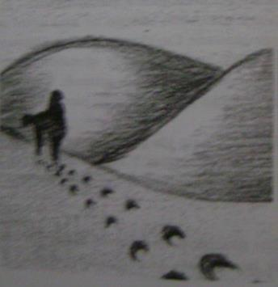

Masanızın üstü bitmemiş işlerle dolu. İş arkadaşlarınız çoktan evlerine gitmiş. Saate bakıyorsunuz, o da size bakıp gülüyor. İçinizde gittikçe ağırlaşan bir duyguyla, işleriniz acaba hiç bitmeyecek mi diye düşünüyorsunuz.
Profesör dünyanın en sıkıcı konusu hakkındaki üç saatlik derste anlatıyor da anlatıyor. Defterinizde karalama yapmak için hiç boş yer kalmadı ve dersin daha sadece yarım saati geçti. Zamanın içinde donduğunuzu hissediyorsunuz.
Beklemek kimi zaman herhangi bir anlık acıdan çok daha özel bir tür işkencedir. Can sıkıntısı ve bunalma bir araya geldiğinde en sağlam insanı bile paniğe uğratabilir. İlk yolculuğumuz bizi sonsuzluk ile yüz yüze getirecek. Kendinizi hazırlamak için bir dakika bekleyin ve uçsuz bucaksız çöle girin.
1. Hiç sonu yokmuş gibi görünen ıssız ve geniş bir çölde bir deveye binmiş gidiyorsunuz. Yorgunluktan bitap düşene kadar deveyi sürdünüz.
Sizi taşıyan deveye hangi sözcükleri söylersiniz? 2. Tam susuzluktan öleceğinizi düşünürken önünüzde çok güzel bir vaha göründü. Ama birisi sizden önce oraya varmış. Bu diğer yolcu kimdir? Tanıdığınız birinin adını verin.
3. Çölde zaman çok yavaş geçiyor ve uzaktan bir kasabanın ışıklan görünene kadar sanki asırlar geçti. Nihayet varacağınız yere geldiniz.
Yolculuğunuzun sonuna geldiğinizde neler hissediyorsunuz?
4. Uzun zamandır üzerinde ilerlediğiniz deveyle ayrılma zamanı geldi.
Deveden inerken yeni bir sürücü geliyor ve sizin kalktığınız eğere oturuyor. Yeni binici kimdir? Hayatınızdaki bir başka kişiyi seçiniz.
